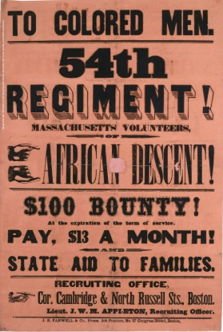
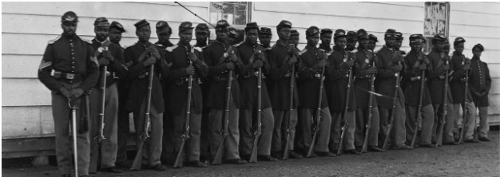

Black Soldiers & Action
New Right to Join the Army
After the Proclamation, Black men were allowed to join the Union Army. This represented a dramatic shift in policy, as previously the military had excluded African Americans from combat roles. The Proclamation specifically authorized the enlistment of Black soldiers.
This change was both practical and symbolic. The Union needed more soldiers, and African Americans were eager to fight for their freedom and prove their citizenship. Military service became a pathway to real participation in American society.
Impact
About 200,000 African Americans fought in the war. They were fighting for both their freedom and the freedom of their families still in enslavement. These soldiers made up approximately 10% of the Union Army and played crucial roles in many battles.
Black soldiers faced discrimination even within the Union Army. They received lower pay and were often assigned labor rather than combat duties. Despite these challenges, they served with distinction and repeatedly proved their courage.
The 54th Massachusetts Regiment
Led by Colonel Robert Gould Shaw, the 54th Massachusetts became famous for their assault on Fort Wagner in South Carolina. Though the attack failed, the regiment's bravery demonstrated that Black soldiers could fight just as courageously as any white unit.
The regiment included both free Black men from the North and former slaves. Their service helped change Northern attitudes about African Americans' capabilities and citizenship rights.
The 54th Massachusetts Infantry Regiment was one of the first African American units in the Union Army, which proved the courage and dedication of Black soldiers in the fight for freedom.
Broader Military Contributions
African American soldiers served in both the Army and Navy throughout the war. They participated in major campaigns from Virginia to Texas, often fighting with extra motivation knowing they were battling for their people's freedom.
Many Black soldiers were formerly slaves who had escaped to Union lines. Their knowledge of Southern terrain and Confederate positioning proved extremely valuable to Union commanders.
"Once let the black man get upon his person the brass letter, U.S., let him get an eagle on his button, and a musket on his shoulder and bullets in his pocket, there is no power on earth that can deny that he has earned the right to citizenship."— Frederick Douglass, 1863